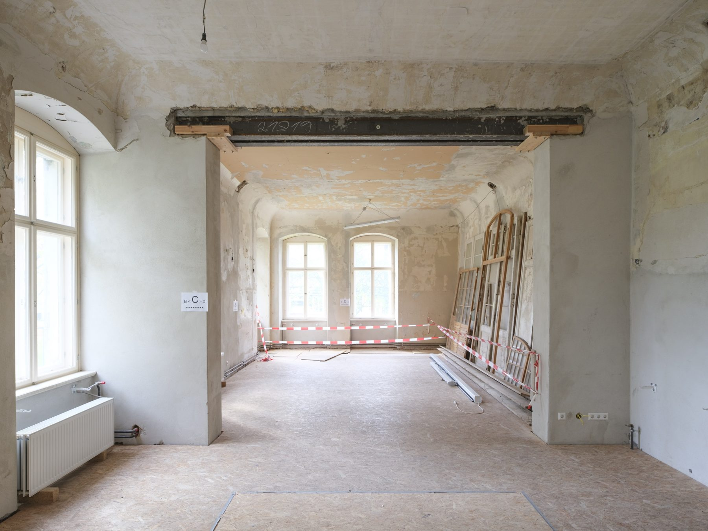
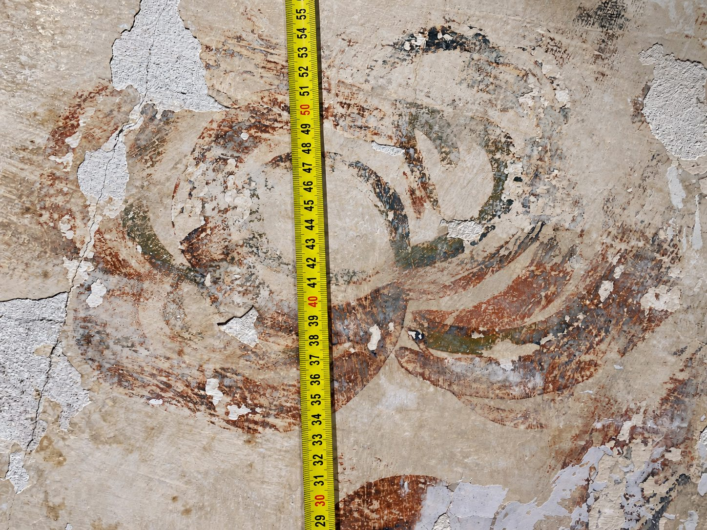
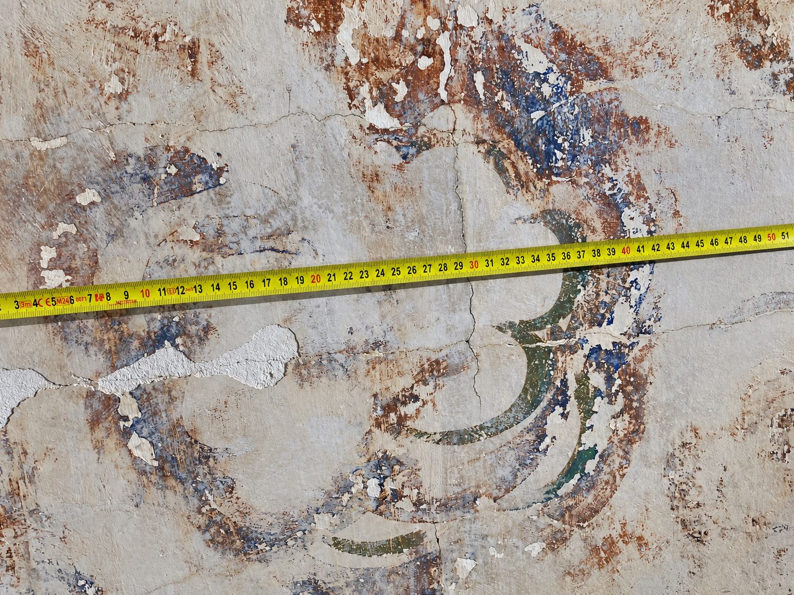
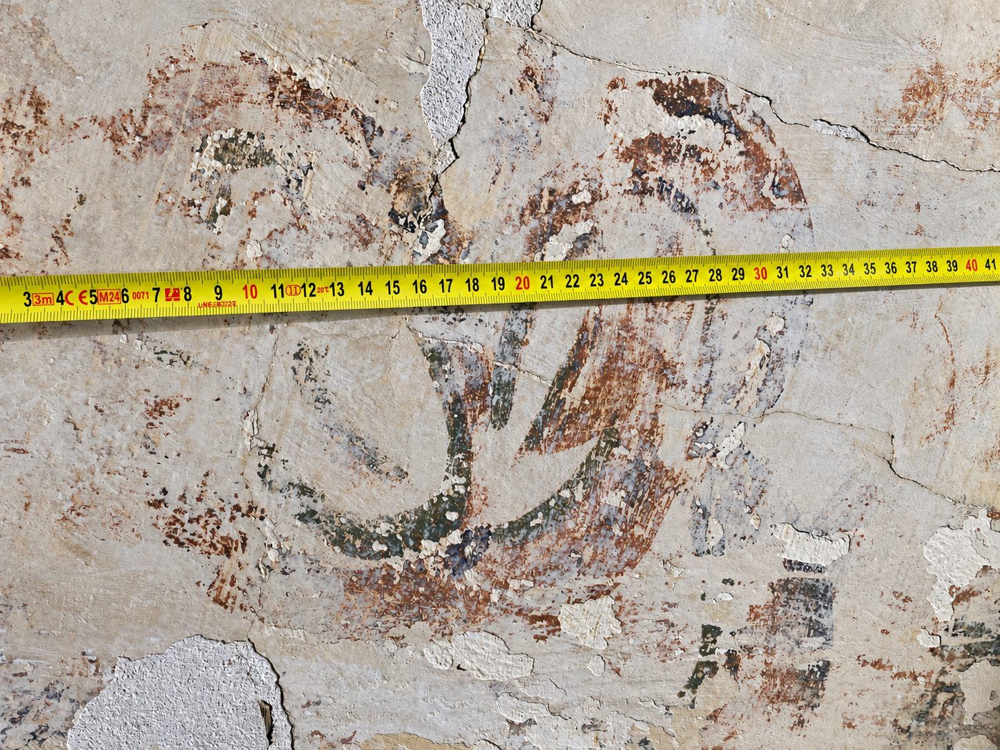
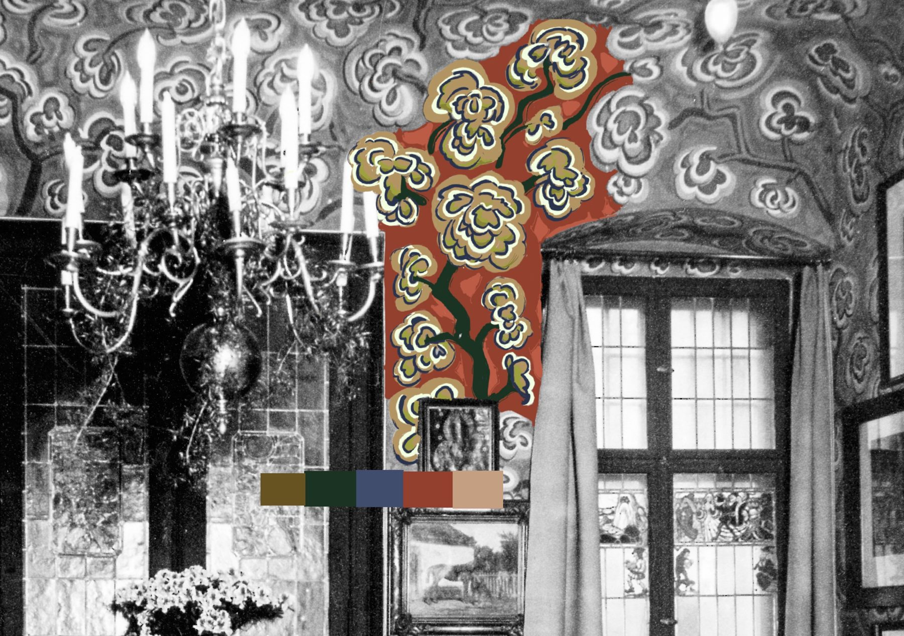

Oberflächen laut Plan
| Wand | Putz |
| Decke | Schilfrohrdecke |
| Fußboden | Parkett (Detail H44-613) |
| Fenster, Türen, Fußleiste | Anstrich |

1924 feierte eine Hochzeitsgesellschaft in einem Raum, dessen Wände und Gewölbe ganz von gemalten Bäumen und Wolkenblüten bedeckt waren. Heute sind davon nur Fragmente unter abblätternden Farbschichten übrig.
Diese Seite zeigt Schritt für Schritt, wie aus Archivfoto, Befund und Ausführungsplanung ein neues, maßgenaues Wandbild für R104 entstehen wird.
Das Hochzeitsfoto ist die wichtigste Quelle für das ursprüngliche Aussehen. Man sieht Stämme, die von unten aufsteigen, sich verzweigen und in große, mehrfach konturierte Wolkenblüten übergehen. Das Motiv läuft ohne Unterbrechung über Wände, Fensterbögen und Gewölbe.
Die Aufnahme zeigt auch den Maßstab: Die Blüten sind etwa kopfgroß, und zwischen den Fenstern steht jeweils ein Baum. Diese Rhythmik wurde für den Neuentwurf übernommen.

Das Gutshaus wird restauriert und modernisiert. Bauherrin ist die NEUES BERLIN eG, geplant wird von Stolzenberg Architekten, die Restaurierungsplanung liegt bei ProDenkmal. Raum 104 ist Teil des Gastraums R102/R104/R107.
Der Grundriss markiert rot die Wandabschnitte, die das Wandbild tragen: Wand B mit Gartentür Ta-104-1 und den Fenstern F-O-104 und F-O-103, Wand C mit dem Durchbruch zu R107, Wand D mit der Tür T-104-1.

| Wand | Putz |
| Decke | Schilfrohrdecke |
| Fußboden | Parkett (Detail H44-613) |
| Fenster, Türen, Fußleiste | Anstrich |

Die Fotos der Wände B, C und D zeigen den Raum im Umbau. Die Böden sind mit OSB ausgelegt, der Durchbruch zu R107 ist mit einem Stahlträger abgefangen. Unter den abgeplatzten Putz- und Farbschichten sind an Wand D und im Gewölbe noch Reste der alten Malerei zu erkennen.



Freigelegte Blütenfragmente wurden mit Maßband fotografiert. Daraus ergeben sich die echten Größen und der Aufbau der Pinselfassung: kräftige C-Bögen in Rostrot, dunkelgrüne Innenkonturen, Ultramarin in den Blütenblättern, alles auf hellem Kalkgrund.



Um die Wirkung im Raum zu beurteilen, wurde das Motiv in Collagen direkt auf das Hochzeitsfoto gelegt. So lassen sich Farbstimmungen im originalen Umfeld aus Kronleuchter, Bleiglas und Bilderrahmen vergleichen.



Aus allen Quellen entstand ein durchgehendes Wandbild für R104. Zehn Bäume wachsen aus den Pfeilern zwischen den Öffnungen von Wand B, C und D. Ihre Kronen laufen über die Vouten in die Decke und schließen dort als Himmel aus Blüten und Blättern.
Alle Maße stammen aus den Vektordaten von H44-715, Index D. Die Abbildungen unten stammen aus dem Übersichtsplan HSH_R104_Wandbild_Plan_A1.pdf.
So wird die Farbwelt sichtbar: Unten stehen sechs Farbfelder, eines für jede Farbwelt. Ein Klick auf ein Farbfeld zeigt das ganze Wandbild in dieser Farbwelt: die Gesamtabwicklung, jede Wand, die Decke und die einzelnen Blüten in den Blättern 1 bis 4. Mit „Nächste →“ lassen sich alle Farbwelten nacheinander durchsehen.
CMYK: umgerechnet für Offsetdruck auf gestrichenem Papier (FOGRA39, ISO Coated v2). RAL: nächstliegender Farbton aus RAL Classic, ΔE gibt den Abstand an (unter 2 kaum sichtbar, über 5 deutlich). Alle Werte sind Näherungen und vor der Produktion am Farbfächer zu prüfen.
Ausschnitt Wand B, Achse A bis Pfeiler neben Ta-104-1, ab +1,30 m bis Deckenkante, M 1:20. Alle Farbwelten nutzen dieselbe Vektorgeometrie. Im SVG ist jede Farbe eine eigene Klasse.
Zum Schluss erhält das Wandbild eine Patina, die dem handgemalten Duktus der Originalfassung nahekommt. Die Vektorzeichnung liefert die exakte Geometrie. Die Patina nimmt ihr die digitale Glätte und lässt die Flächen wieder wirken wie mit dem Pinsel auf Kalkputz gemalt.
Grundlage sind die Befundfotos: der unregelmäßige Pinselrand der C-Bögen und die wolkige Deckkraft der Farben.
Konturen laufen leicht unruhig aus, wie ein geführter Pinselstrich statt einer gestochenen Linie.
Feine, gerichtete Strukturen in den Flächen zeigen die Bewegung des Pinsels.
Die Farben variieren in sich, dichter und lasierender, wie bei Kalk- und Leimfarbe.
Ein heller, ungleichmäßiger Schleier dämpft die Farbwelt, so wie gealterte Wandmalerei wirkt.
Kleine Fehlstellen lassen den Grund durchscheinen, sparsam gesetzt, damit das Motiv klar bleibt.
Die Patina liegt als eigene Ebene über dem Motiv und funktioniert mit allen sechs Farbwelten.
Stärke und Körnung der Patina werden am Probedruck in Originalgröße festgelegt.